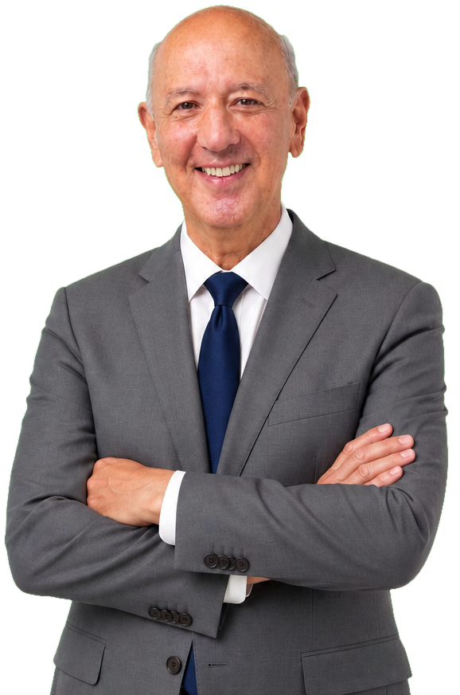
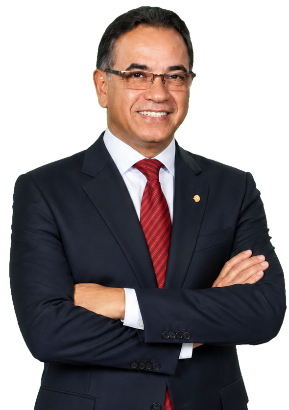
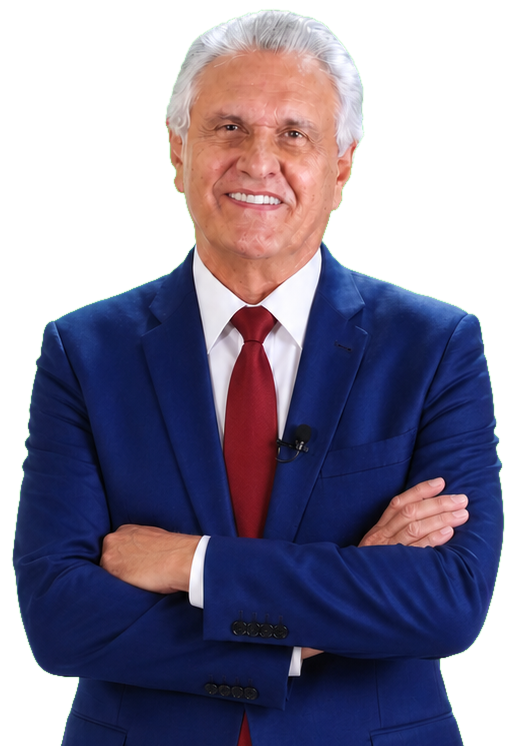
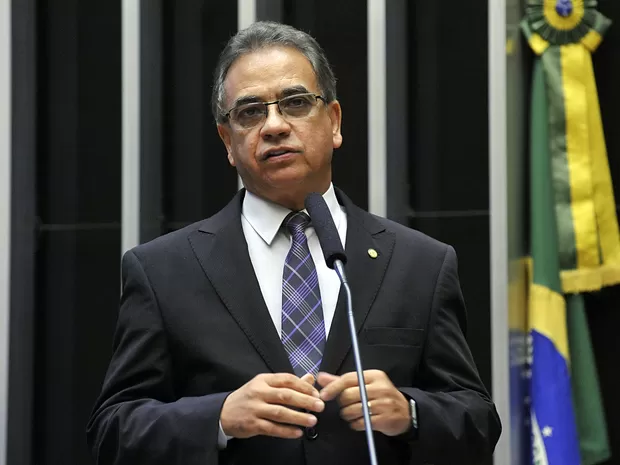
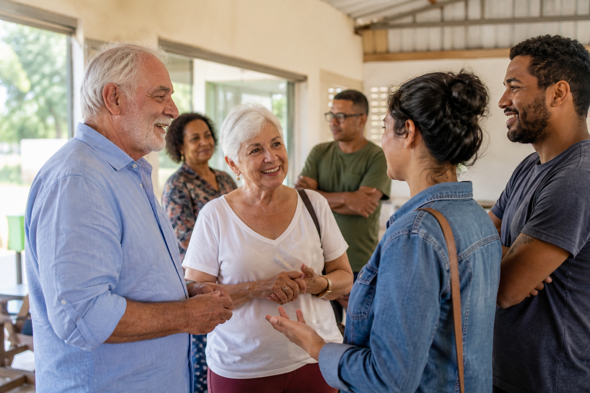
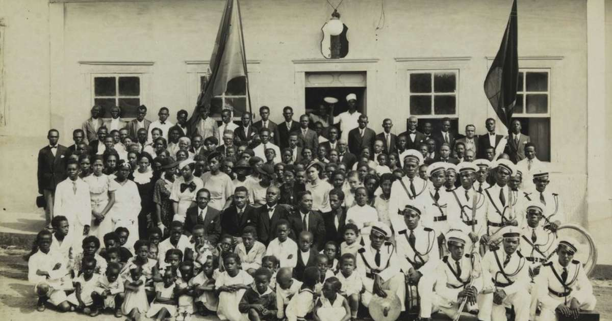
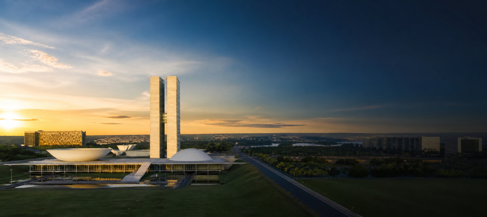

ArrudaGovernador
Pastor, advogado, ex-deputado federal e ex-ministro. Uma vida pública dedicada à fé, à família e ao povo do Distrito Federal.
Com Deus para frente, sempre.

ArrudaGovernador

PastorRonaldo FonsecaSenador

CaiadoPresidente
Quem é Ronaldo Fonseca

Ronaldo Fonseca de Souza nasceu em Volta Redonda (RJ), em 4 de abril de 1959, e construiu sua vida pública no Distrito Federal. Pastor da Assembleia de Deus, advogado e escritor, reúne a escuta de quem cuida de pessoas com a experiência de quem conhece as instituições brasileiras.
Foi deputado federal pelo DF por dois mandatos, entre 2011 e 2019. Na Câmara, integrou comissões decisivas, exerceu funções de liderança partidária e atuou em temas como Constituição e Justiça, direitos humanos, educação, segurança pública e defesa do consumidor.
Com Deus para frente, sempre.
Gente do Distrito Federal
O Distrito Federal é formado por histórias, gerações e talentos diferentes. Ronaldo Fonseca quer levar ao Senado uma representação próxima das famílias, dos trabalhadores, da juventude e de cada região administrativa.
Mais atenção à primeira infância, às mães, aos idosos e às redes comunitárias que cuidam de quem mais precisa.

Escuta permanente, igualdade de oportunidades e diálogo com pessoas de todas as origens, idades e regiões do DF.
Ensino técnico, primeiro emprego, inovação e apoio a quem transforma conhecimento em trabalho e renda.
Um compromisso de visitar, ouvir e prestar contas nas regiões administrativas, aproximando o Senado da vida real das pessoas.
Quero participar →Presidente do Conselho Político Nacional da Convenção Geral das Assembleias de Deus no Brasil.
Formado pelo Centro Universitário Euro-Americano, em Brasília, consolidando sua atuação como advogado.
Dois mandatos consecutivos na Câmara dos Deputados, com presença em comissões permanentes e especiais.
Assumiu a Secretaria-Geral da Presidência da República em 28 de maio de 2018.
Galeria
Registros da atuação pública de Ronaldo Fonseca na Câmara dos Deputados, em reuniões institucionais e no exercício de suas responsabilidades nacionais.
Compromissos
Propostas construídas sobre quatro pilares: respeito às pessoas, responsabilidade pública, desenvolvimento e liberdade.
Fortalecer políticas de cuidado com crianças, idosos e pessoas em situação de vulnerabilidade, valorizando quem sustenta as famílias do DF.
Reduzir barreiras para quem produz, apoiar pequenos negócios e ampliar oportunidades de formação e primeiro emprego.
Defender integração entre forças de segurança, prevenção à violência e valorização dos profissionais que protegem a população.
Atuar no Senado para assegurar recursos, investimentos e respeito às necessidades de todas as regiões administrativas.
Proteger a liberdade religiosa, a livre expressão e a convivência democrática, com firmeza contra o preconceito e a intolerância.
Apoiar ensino técnico, qualificação profissional e valorização dos educadores para preparar jovens para o futuro.
Ronaldo Fonseca presente em todo o DF
Explore as Regiões Administrativas e conheça a população urbana estimada de cada território. Um mandato no Senado precisa ouvir e representar todo o DF.
Fonte: IPEDF Codeplan — Pesquisa Distrital por Amostra de Domicílios Ampliada (PDAD-A 2024). População urbana estimada.
Apoio que representa história

A Frente Negra Brasileira soma sua voz a esta candidatura ao Senado. Um apoio firmado no compromisso com dignidade, igualdade de oportunidades, participação política e valorização do povo negro na construção do Brasil.
Uma aliança pelo futuro do Distrito Federal — com memória, representatividade e trabalho.
Conheça a Frente Negra Brasileira ↗Mostre seu apoio
Envie sua foto, escolha um dos modelos e baixe sua imagem de perfil pronta para compartilhar.
Sua foto é processada apenas no seu dispositivo e não é enviada para nenhum servidor.
Prévia quadrada • 1080 × 1080 pixels
Faça parte
Com Deus para frente, sempre.
Cadastre-se para acompanhar os próximos passos da campanha e participar das mobilizações em sua cidade.
Acompanhe
Informações recentes sobre Ronaldo Fonseca, as articulações no Distrito Federal e o projeto nacional do PSD.
Decisão da cúpula do partido confirma o ex-deputado federal e ex-ministro na chapa liderada por Arruda.
Leia a notícia ↗Representantes comunitários, religiosos, empresariais e políticos participaram da mobilização.
Leia a notícia ↗
PSD • BrasilConvenção nacional do partido confirmou a chapa para as eleições gerais de 2026.
Leia a notícia ↗